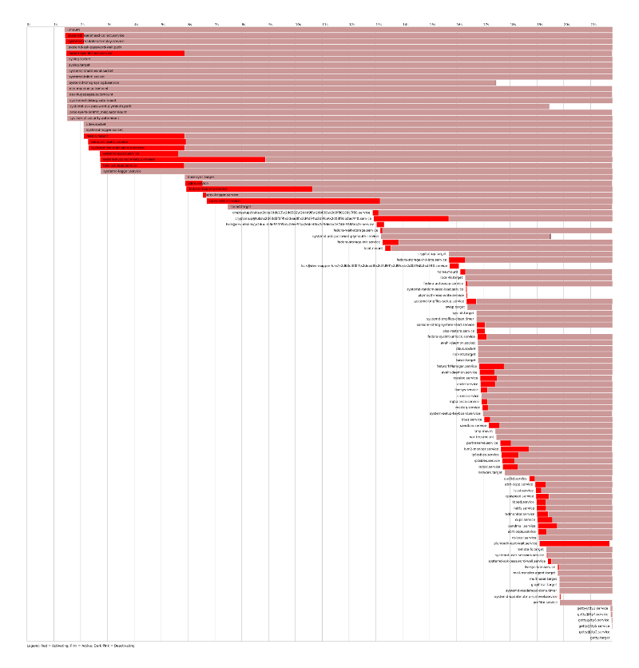

stderr
poznámky
Autor
Jakub Jedelský
Jsem ta Ops část z DevOps týmu. V GoodData ROLAP dbám o to, aby všechny databáze běžely a data se lehce nahrávala.
Social


Fedora 15 & systemd: co zdržuje bootování
Chcete-li si zkontrolovat, co nejdéle trvá při startu vašeho systému a
podle toho si bootování odladit, použijte utilitku systemd-analyze.
Jedná se (nejen) o náhradu Bootchart, který jste mohli znát z
klasického startu pomocí init. A co systemd-analyze umí?
Používám nijak neodladěný systém na notebooku, proto nabíhání chvilku chvilku trvá (cca 31 sekund), což mě ale díky bezvadně funkčnímu uspávání nebolí. Michal Schmidt na Fedora 15 Release Party ukázal, že po úpravách zkrouhnul boot na cca 3 sekundy.
Čas:
$ systemd-analyze time
Startup finished in 1433ms (kernel) + 15086ms (initrd) + 21817ms (userspace) = 38337ms
Textový výpis:
$ systemd-analyze blame
6452ms udev-settle.service
6153ms systemd-vconsole-setup.service
4699ms fedora-readonly.service
4416ms fedora-sysinit-hack.service
3752ms media.mount
3644ms remount-rootfs.service
3585ms systemd-remount-api-vfs.service
3112ms hwclock-load.service
2922ms systemd-sysctl.service
(...)
Grafický výstup:
Vygeneruje grafický svg výstup, který není nepodobný výstupu z výše zmíněného bootchart.
$ systemd-analyze plot > ~/plot.svg
